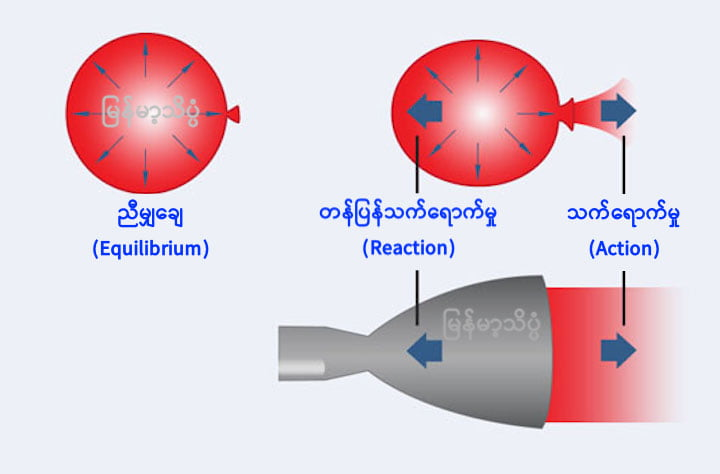
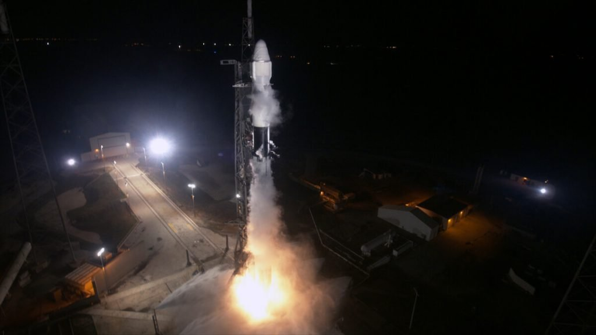
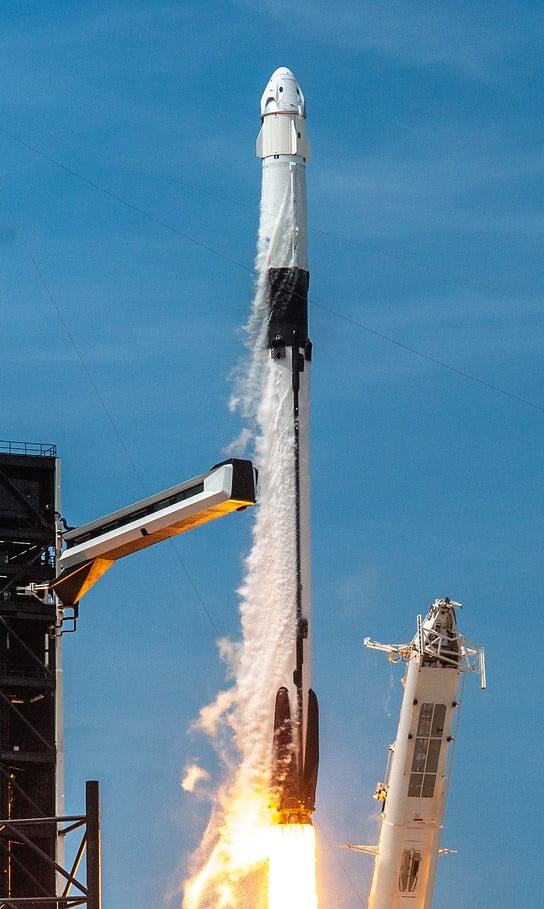
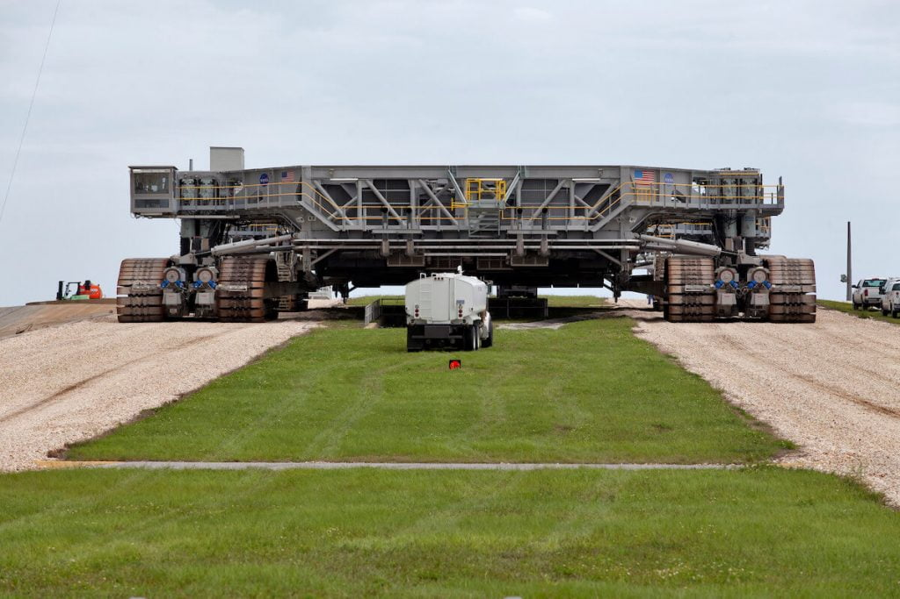

ဒါပေမယ့် ၁၉၅၀ ပြည့်လွန် နှစ်တွေက အစပြုလို့ ဒုံးပျံတွေကို အသုံးပြုပြီး ဂြိုဟ်တုတွေ နဲ့ လူသားတွေကို ကမ္ဘာမြေပြင် အပြင်ဖက် အာကာသ ထဲကို ပို့ဆောင် ခဲ့ကြပါတယ်။
ဒီဆောင်းပါး မှာတော့ ဒုံးပျံတွေ (Rockets) ဘယ်လို အလုပ်လုပ် လဲ ဆိုတာ တင်ပြသွားမှာ ဖြစ်ပါတယ်။ ဒီ ဆောင်းပါးမှာ တင်ပြမယ့် ဒုံးပျံ ဆိုတာက အဓိက အားဖြင့် လူနဲ့ ကုန်ပစ္စည်း တွေကို ကမ္ဘာအပြင်ဖက် ကမ္ဘာပတ် လမ်းကြောင်းနဲ့ ကမ္ဘာပတ် လမ်းကြောင်း အလွန် နေရာ ဒေသတွေကို သယ်ဆောင်ပေးတဲ့ အာကာသ ဒုံးပျံ တွေကို ဆိုလိုတာ ဖြစ်ပါတယ်။
ဒုံးပျံတစ်စင်းဘယ်လိုအလုပ်လုပ်သလဲ
လူအများရဲ့ စိတ်ထဲမှာ ဒုံးပျံ ပျံတာကို ကြည့်ပြီး ဒီ ဒုံးပျံ တွေဟာ လေကို တွန်းပြီး ရွှေ့လျှားတယ် လို့ ထင်တတ်ကြပါတယ်။ ဒါပေမယ့် ဒီအထင် က တကယ်တော့ မဟုတ်ပါဘူး။ ဒုန်းပျံတွေ ပျံတာ လေကို တွန်းပြီး ပျံတက်တာ မဟုတ်ရပါဘူး။ဒီလို လေကို တွန်းပြီး သွားတယ်ဆို လေမရှိတဲ့ အာကာသ လေဟာနယ်ထဲ ဒုန်းပျံတွေ ဘယ်ပျံနိုင် တော့မလဲဗျာ။ ဒါပေမယ့် ဒုံးပျံ တွေက လေမရှိလဲ ရွှေ့လျားနိုင် ကြပါတယ်။
ဒါဆို လေမရှိတဲ့ လေဟာနယ် ထဲမှာ ဒုံးပျံတွေက ရှေ့ကို သွားဖို့ ဘာကို တွန်းပြီး သွားတာပါလဲ။
ဒုံးပျံတွေဟာ Momentum လို့ခေါ်တဲ့ အဟုန် ကို အသုံးပြုပြီး သွားတာ ဖြစ်ပါတယ်။ ဒီ Momentum ဆိုတာ အလွယ်ပြောရရင် ရွေ့နေတဲ့ အရာ ဝတ္ထု တစ်ခုမှာ ရှိနေတဲ့ “အား” ပဲ ဖြစ်ပါတယ်။
ရူပဗေဒ သဘောတရား အရ ပြင်ပက အားသက်ရောက်မှု တစ်ခုခု မရှိမချင်း အရာဝတ္ထုတွေ ရဲ့ စုစုပေါင်း momentum ဟာ အမြဲ ညီမျှနေ ရပါမယ်။ အကယ်လို့ အရာ ဝတ္ထု ၃-၄ ခု တွဲ ပြီး စု ထားရင်လဲ ဒီ အစုအဝေးရဲ့ စုစုပေါင်း momentum ဟာ မပြောင်းလဲပဲ ရှိနေ ရမှာ ဖြစ်ပါတယ်။
ကောင်းပြီ၊ အခု တစ်ခုလောက် စိတ်ကူးကြည့် ရအောင်ပါ။ စကိတ် စီးတာ တွေ့ဖူးကြတယ် မဟုတ်လား။ အခု ကိုယ်ကိုယ်တိုင် စကိတ် စီးနေတယ်လို့ သဘောထား ကြည့်ရအောင်။ စကိတ် စီးတာထက် စကိတ်ပေါ် တက်ရပ် ကြည့်တာပေါ့ဗျာ။
ကောင်းပါပြီ။ သင်ဟာ စကိတ် ပေါ်မှာ ရပ်နေပြီး လက်ထဲမှာလဲ ဘောလုံး တစ်လုံး ကိုင်ထားတယ် ဆိုပါစို့။ အဲ့ဘော်လုံးကို သင့်ရှေ့ကို လှမ်းပစ်လိုက်ပါ။ သင်ဘာဖြစ် သွားမယ် ထင်ပါသလဲ။
ဘောလုံးကို ပစ်လိုက်တဲ့ အချိန်မှာ သင်ဟာလဲ စကိတ်ပေါ်မှာ စကိတ်နဲ့ အတူ နောက်ကို ပေ အနည်းငယ် ဆုတ်သွားမှာ ဖြစ်ပါတယ်။
ဒီလို ဘာ့ကြောင့် ဖြစ်ရလဲ ဆိုတော့ ဘော်လုံးကို မပစ်ခင်က သင်နဲ့ ဘော်လုံး ပေါင်းရင် ရှိတဲ့ Momentum ဟာ သင်ဘော်လုံးကို ပစ်လိုက်ပြီးတဲ့ အချိန်တိုင်အောင် မပြောင်းလဲ လို့ပါပဲ။ ဒီလိုမပြောင်းလဲတဲ့ အတွက် ဘော်လုံးကို ပစ်လိုက်ပြီးလဲ သင့်မှာ ရှိတဲ့ Momentum နဲ့ ဘော်လုံးမှာ ရှိတဲ့ Momentum ပေါင်းရင် မပစ်ခင်က Momentum နဲ့ အတူတူပဲ ဖြစ်နေပါတယ်။
အခု ဘော်လုံး ပစ်လိုက်ပြီ။ ဒီလို ပစ်လိုက်တဲ့ အတွက် ဘော်လုံးက သင်နဲ့ ဆန့်ကျင်ဖက်ကို ပြေးထွက် သွားပါတယ်။ ဒီ ပြေးထွက်သွားတဲ့ အဟုန်ကို တန်ပြန်ဖို့ သင်ကလဲ ဘော်လုံး ထွက်သွားတဲ့ ဖက်နဲ့ ဝေးရာ ဆန့်ကျင်ဖက် ကို ရွှေ့သွားတာ ဖြစ်ပါတယ်။ ဒီတော့မှ ဘော်လုံး ထွက်သွားလို့ ဖြစ်လာတဲ့ အဟုန် နဲ့ သင် ဆန့်ကျင်ဖက်ကို ရွှေ့သွားလို့ ဖြစ်လာတဲ့ အဟုန် နှစ်ခု အချင်းချင်း ပြန်ကြေသွားပြီး momentum လဲ အပြောင်းအလဲ မရှိမှာ ဖြစ်ပါတယ်။
တနည်းအားဖြင့် ပြောရရင် ဒါဟာ နယူတန်ရဲ့ တတိယ နိယာမ ဖြစ်တဲ့ “သက်ရောက်မှု တိုင်းမှာ ဆန့်ကျင်ဖက် သက်ရောက်မှု ရှိတယ်” သဘောတရားကို အသုံးပြု ထားတာလဲ ဖြစ်ပါတယ်။ အင်ဂျင်ရဲ့ နောက်တွန်းအားကြောင့် သူနဲ့ ဆန့်ကျင်ဖက် အရပ်ကို ဒုံးပျံက ရွှေ့လျှားသွားတာ လို့ အလွယ် မှတ် ထားလို့ ရပါတယ် ခင်ဗျာ။

အာကာသ ထဲမှာ လေမရှိတော့ ဒုံးအင်ဂျင် တွေဟာ လောင်စာ လောင်ကျွမ်းဖို့ အောက်ဆီဂျင်ကို သယ်ဆောင် သွားရပါတယ်။ အောက်ဆီဂျင် များများ သယ်နိုင်အောင် ဒုံးပျံတွေဟာ အောက်ဆီဂျင်ကို အရည် အဖြစ် ပြုလုပ်ပြီး သယ်ဆောင် ကြပါတယ်။ အောက်ဆီဂျင်နဲ့ ရောစပ် လောင်ကျွမ်းမဲ့ လောင်ဆာ ကိုတော့ အရည် (သို့) အခဲ အနေနဲ့ သယ်ဆောင် ကြပါတယ်။
ဒုံပျံပစ်လွှတ်ခြင်းအဆင့်ဆင့်
ယခု ခေတ်ပေါ် ဒုံးပျံတွေဟာ အနည်းဆုံး အဆင့် ၂ ဆင့် ပါဝင်ပါတယ်။ ဒီ အဆင့်တွေကို အဆင့်ဆင့် အပေါ်အောက် ထပ်ထားတာပါ။ အဆင့်တိုင်းမှာ ကိုယ်ပိုင် လောင်စာနဲ့ သီးသန့် ဒုံးအင်ဂျင်တွေ ရှိကြပါတယ်။ အဆင့် တစ်ခု နဲ့ တစ်ခု ပါဝင်တဲ့ ဒုံးအင်ဂျင် အရေ အတွက်ကလဲ ကွာခြား နိုင်ပါတယ်။ဥပမာ ပြောရရင် SpaceX ရဲ့ Falcon 9 ဒုံးပျံ ဆိုရင် ပထမ အဆင့်မှာ ဒုံးအင်ဂျင် ၉ လုံး ပါဝင်ပါတယ်။ နော့သ်ရပ် ဂရမ်မန် (Northrop Grumman) ရဲ့ အန်တာရက်စ် (Antares) ဒုံးပျံရဲ့ ပထမ အဆင့်ကြတော့ ဒုံးအင်ဂျင် နှစ်ခုပဲ ပါပါတယ်။
ဒုံးပျံတွေ တက်စ ကာလမှာ လိုအပ်တဲ့ အရှိန် မြန်မြန်ရအောင် ဒုံးပျံ ဘေးမှာ အားမြှင့်ပေးမယ့် ဘူစတာ ဒုံးစက်တွေ (Booster Rockets) ကိုလဲ တပ်ဆင်လေ့ ရှိကြပါတယ်။
ဒုံးပျံရဲ့ ပထမ အဆင့်ဟာ ဒုံးပျံကို ကမ္ဘာ့ လေထု အောက်ဆုံး အလွှာ (Lower atmosphere) ကနေ လွတ်အောင် တွန်းပို့ပေးပါတယ်။ ဒီပထမ အဆင့်ဟာ ဒုံးပျံကြီး တစ်စင်းလုံးကို လုံးဝ ရပ်နေရာကနေ ကမ္ဘာ့လေထု အောက်လွှာ က လွတ်အောင် တွန်းတင် ပေးရတာမို့ ဒုံးပျံ တစ်ခုလုံးမှာ အကြီးဆုံးနဲ့ အင်ဂျင်အား အကောင်းဆုံး အပိုင်းလဲ ဖြစ်ပါတယ်။
ဒုံးပျံ ပျံတက်တဲ့ အရှိန် မြန်လေလေ လေထုရဲ့ ခုခံအား များလေလေ ဖြစ်ပါတယ်။ တဖက်မှာလဲ အမြင့်ပိုင်း ရောက်လေလေ၊ လေထု ပါးလာလေလေ ပါပဲ။ ဒါ့ကြောင့် ဒုံးပျံ တွေဟာ ပျံတက်စ အနိမ့်ပိုင်းမှာ အရှိန်နဲ့ ပျံသန်းနေစဉ် ပြင်းထန်တဲ့ လေထု ခုခံအားနဲ့ ရင်ဆိုင်ရပြီး အရှိန်လဲ ရလာ အမြင့်ပိုင်းလဲ ရောက်လာတဲ့ အချိန်မှာတော့ လေထု ပါးသွားတဲ့ အတွက် လေထု ခုခံအားက ပြန်ကျ သွားပါတယ်။ တနည်းအားဖြင့် ဒုံးပျံ တက်တဲ့ အချိန်မှာ လေထု ခုခံအား တဖြည်းဖြည်း များလာပြီး အမြင့်ဆုံး ရောက်ပြီးမှ ခုခံအား ပြန်ကျသွားတာပါ။
ဒီ လေထုခုခံအား အမြင့်ဆုံး ရောက်တဲ့ အမှတ်ကို max q လို့ သတ်မှတ် ထားပါတယ်။ SpaceX ရဲ့ Falcon 9 ဒုံးပျံဟာ ဒီ max q အမှတ်ဟာ အမြင့် ၇ မိုင်နဲ့ ၉ မိုင် အကြားမှာ ရှိပြီး ဒီအမှတ်ကို ရောက်ဖို့ စက္ကန့် ၈၀ ကနေ ၉၀ လောက်ပဲ အချိန် ယူ ရပါတယ်။

SpaceX ရဲ့ Falcon 9 ပထမ အဆင့် ကတော့ ပြန်ကျတဲ့ အချိန် ဒုံးစက်နဲ့ အရှိန်သတ်ပြီး မြေပြင်ကို ပြန်လည် ဆင်းသက်ပါတယ်။ ဒီ ပထမ အဆင့်ကို ပြန်လည် စစ်ဆေး ပြင်ဆင်ပြီး နောက်ဒုံးပျံတွေ လွှတ်တင်တဲ့ အခါမှာ ပြန် အသုံးပြုပါတယ်။ ဒီ ပထမ အဆင့်ရဲ့ အင်ဂျင်ကို ၁၀ ခါ ပစ်လွှတ်ပြီးတိုင်း အသစ် လဲလှယ် ပေးပါတယ်။ Falcon 9 ပထမ အဆင့်ဟာ စုစုပေါင်း အကြိမ် ၁၀၀ လောက် ပြန် အသုံးပြုနိုင်မယ်လို့ ခန့်မှန်းပါတယ်။
ဒုံးပျံရဲ့ ဒုတိယ အဆင့်နဲ့ အခြား အဆင့် တွေကတော့ လေထု အလွန် ပါးလျှာတဲ့ အထက်ပိုင်း လေထု နဲ့ လေမရှိတဲ့ အာကာသ ထဲကို ရောက်ရှိ သွားပြီမို့ ခုခံအား ကြီးကြီး မားမား မတွေ့ရ တော့ပါဘူး။ ပထမ အဆင့် ကိုလဲ ဖြုတ်ချခဲ့ပြီမို့ အလေးချိန်ကလဲ ပေါ့ပါး သွားပါပြီ။ ဒါ့ကြောင့် ဒီ အဆင့်တွေဟာ အရွယ်အစား ကြီးကြီး မလိုသလို အင်ဂျင်လဲ သိပ်ကြီးကြီး မလိုတော့ပါဘူး။ ဒါ့ကြောင့် ဒီ အဆင့်တွေဟာ အများအားဖြင့် အင်ဂျင် တစ်လုံးပဲ တပ်ဆင်ထားကြလေ့ ရှိပါတယ်။
ဒုံးပျံအမျိုးအစားများ
မော်တော်ကားတွေမှာ လူစီးကား၊ ဘတ်စ်ကား၊ ကုန်တင်ကား အစရှိသဖြင့် အမျိုးအစား အစုံ ရှိသလို ဒုံးပျံ တွေမှာလဲ အမျိုးအစား အစုံ ရှိပါတယ်။တိုင်းတာရေးဒုံးပျံ (Sounding Rockets) တွေဟာ လေထု အမြင့်ပိုင်းကို ကွေးကွေးလေး တက်သွားပြီး အာကာသ အနိမ့်ပိုင်းထဲကို ၅ မိနစ် ကနေ မိနစ် ၂၀ လောက် ပဲ ဝင်ရောက်ကာ ကမ္ဘာမြေကို ပြန်လည် ဝင်ရောက် ပျက်ကြ သွားကြပါတယ်။ အများအားဖြင့် ဒီ တိုင်းတာရေး ဒုံးပျံ တွေကို အချိန်တို ပြုလုပ်တဲ့ သိပ္ပံ သုတေသန တွေအတွက် လွှတ်တင် ကြတာ ဖြစ်ပါတယ်။
ကမ္ဘာပတ်လမ်းအောက် (Suborbital Rockets) ဒုံးပျံတွေကတော့ အာကာသ ကမ္ဘာပတ်လမ်း အောက်ခြေနားကို ခနတာ ဝင်ရောက်ပြီး ကမ္ဘာပေါ် ပြန်ဆင်းလာတဲ့ ဒုံးပျံတွေ ဖြစ်ပါတယ်။ Blue Origin လို အာကာသ အပျော် ခရီးသွား ဒုံးပျံ မျိုးတွေဟာ ဒီအမျိုးအစား ထဲမှာ ပါဝင်ပါတယ်။ နောက်ပြီး ဒီ ဒုံးပျံတွေဟာ ကမ္ဘာပတ် လမ်းကြောင်း အနိမ့်ပိုင်းထဲကို အနိမ့်ပျံ ဂြိုဟ်တုတွေ လွှတ်တင်ဖို့လဲ အသုံးပြုကြပါတယ်။
ကမ္ဘာပတ် လမ်းကြောင်းထဲကို ဂြိုဟ်တုတွေ လွှတ်တင်ဖို့ ဆိုရင်တော့ အလွန် အားကောင်းတဲ့ ဒုံးပျံတွေ လိုအပ်ပါတယ်။ ဒီ ဒုံးပျံ ကြီးတွေဟာ တစ်နာရီကို မိုင် ၁၆,၆၀၀ ကျော်အောင် ပျံသန်းနိုင်ဖို့ လိုအပ်ပါတယ်။ လကမ္ဘာကို သွားတဲ့ အပိုလို လသွားယာဉ် တွေကို လွှတ်တင်ခဲ့တဲ့ စေတန် ၅ (Saturn V) ဒုံးပျံကြီး တွေဟာ သမိုင်းမှာ အားအကောင်းဆုံး ဒုံးပျံ ကြီးတွေ ဖြစ်ပါတယ်။ ဒီ ဒုံပျံဟာ စုစုပေါင်း ပေါင် ၃၀၀,၀၀၀ ကျော် အလေးချိန်ကို သယ်ဆောင်နိုင်စွမ်း ရှိကြပါတယ်။
လက်ရှိမှာတော့ SpaceX ရဲ့ Falcon 9 နဲ့ United Launch Alliance ရဲ့ Delta IV Heavy ဒုံးပျံတွေဟာ ကမ္ဘာမှာ အားအကောင်းဆုံး ဒုံးပျံကြီးတွေ ဖြစ်ကြပါတယ်။ ဒါပေမယ့် နာဆာက လက်ရှိ တည်ဆောက်နေတဲ့ ဒုံးပျံဟာ ဒီ ဒုံးပျံတွေကို ကျော်ဖြတ်ပြီး ကမ္ဘာ့ အားအကောင်းဆုံး ဒုံးပျံတွေ ဖြစ်လာမယ်လို့ ဆိုပါတယ်။

တဖက်မှာလဲ အချို့ ကုမ္ပဏီ တွေဟာ ဂြိုဟ်တု အသေးလေး တွေကို ဈေးသက်သက်သာသာနဲ့ ကမ္ဘာပတ် လမ်းကြောင်းထဲ လွှတ်တင်ပေးနိုင်မယ့် ဒုံးပျံ အသေးစား လေးတွေကို တည်ဆောက်နေ ကြပါတယ်။ ဥပမာ Rocket Lab ရဲ့ အီလက်ထရွန် ဒုံးပျံ (Electron Rocket) ဟာ ပေါင် ရာဂဏန်း လောက်ပဲ ရှိတဲ့ ဂြိုဟ်တုလေးတွေကို ကမ္ဘာပတ် လမ်းထဲကို ဈေးသက်သက်သာသာနဲ့ လွှတ်တင်နိုင်စွမ်း ရှိပါတယ်။
ဒုံးလွှတ်စင် (Launch Pad)
ဒုံးပျံတွေ လွှတ်ဖို့ အထူး တည်ဆောက်ထားတဲ့ ဒုံးလွှတ်စင်တွေ လိုအပ်ပါတယ်။ ဒုံးလွှတ်စင် တစ်ခုမှာ ဒုံးပျံတင်ခုံ နဲ့ ဒုံးပျံကို ဘေးက ထိန်းပေးထားတဲ့ ဒုံးလွှတ် မျှော်စင် (launch mount) တို့ ပါဝင်ပါတယ်။ ဒီ မျှော်စင်က ဒုံးပျံကို ဆက်ထားတဲ့ ပိုက်တွေကနေပြီး ဒုံးပျံအတွက် လိုအပ်တဲ့ လျှပ်စစ်စွမ်းအင်၊ အအေးပေး အရည်တွေ နဲ့ လောင်စာ ရည်တွေ ဖြည့်တင်း ပေးနိုင်ပါတယ်။ နောက်ပြီး ဒီ မျှော်စင်က မိုးကြိုးလွှဲ အနေနဲ့လဲ ဆောင်ရွက်ပေးပြီး ဒုံးပျံကို မိုးကြိုး ထိမှန် ခံရမယ့် အန္တရာယ်ကနေ ကာကွယ်ပေးပါတယ်။ဒီ ဒုံးလွှတ်စင် ပေါ်ကို ဒုံးပျံကြီး ကို တင်တဲ့ အခါ နည်းလမ်း မျိုးစုံကို အသုံး ပြုကြပါတယ်။ နာဆာ ရဲ့ ကနေဒီ အာကာသ စခန်း (NASA’s Kennedy Space Center) မှာတော့ ဒုံးပျံတွေကို သယ်ယူပို့ဆောင်ရေး ယာဉ်ပေါ်မှာ အပိုင်းလိုက် ဒေါင်လိုက် တပ်ဆင်ပါတယ်။ ပြီးမှာ ဒီ ဒေါင်လိုက် အတိုင်း ဒုံးလွှတ်စင် နေရာကို ရွှေ့ပြောင်း ယူကြပါတယ်။ ရုရှား တွေကတော့ ဒုံးပျံကြီး တစ်စီးလုံးကို လှဲလျှက် အထူးရထားပေါ် တင်ပြီး ဒုံးလွှတ်စင်ဆီ ရောက်မှ ဆွဲထူ ထောင်မတ် ယူကြပါတယ်။

ဒုံးပျံတွေကိုဘယ်ကလွှတ်တင်သလဲ
ကမ္ဘာတဝန်းမှာ ဒုံးပျံတွေကို လွှတ်တင်တဲ့ အာကာသ လွှတ်တင်ရေး စခန်းပေါင်း ၁၀ ခု မက ရှိပါတယ်။ အီကွေတာနဲ့ နီးတဲ့ လွှတ်တင်ရေး စခန်းတွေဟာ အီကွေတာ ကနေ ပတ်နေတဲ့ ဂြိုဟ်တုတွေကို လွှတ်တင်ဖို့ လွယ်ကူစေပါတယ်။ ကမ္ဘာမြေရဲ့ လည်ပတ်မှု အရှိန်ကနေလဲ အထောက်အကူ ရတာမို့ ကမ္ဘာ့ဆွဲအားကနေ လွတ်ထွက်အောင် ပျံသန်းဖို့ ပိုမို လွယ်ကူပါတယ်။တဖက်မှာလဲ မြောက်စွန်း (သို့) တောင်စွန်းနား နီးတဲ့ လွှတ်တင်ရေး စခန်းတွေကတော့ ကမ္ဘာကို တောင်မြောက် ပတ်နေတဲ့ Polar Orbit (ဝင်ရိုးစွန်း ပတ်လမ်း) ထဲကို လွှတ်တင်မယ့် ဂြိဟ်တုတွေ လွှတ်တင်ဖို့ ပိုမို လွယ်ကူ စေပါတယ်။
Reference: Rockets and rocket launches, explained | National Geographic